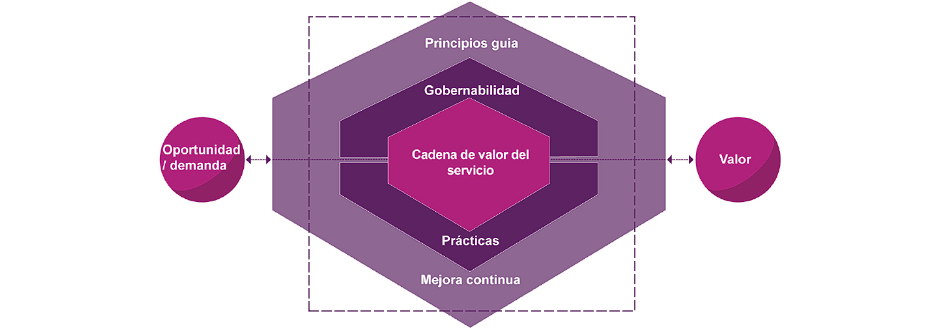
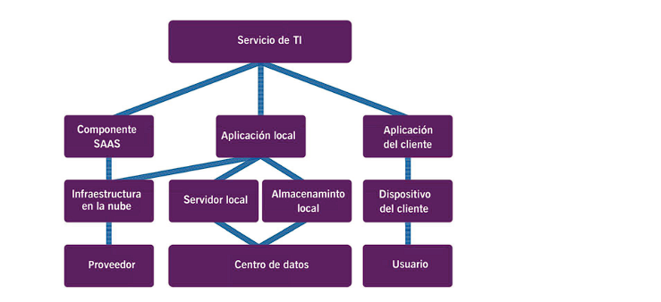

Valor
El SVS facilita la integración y coordinación y proporciona una dirección fuerte, unificada y enfocada en el valor, para la organización.


Valor es el beneficio percibido, utilidad e importancia de algo
El valor no es un término fijo; está sujeto a la percepción de las partes
interesadas, ya sean clientes o consumidores del servicio o parte de
la (s) organización (es) del proveedor del servicio
Las organizaciones varían en tamaño y complejidad. Una organización
puede ser una entidad legal, una parte de una entidad legal o una
compleja red de entidades legales unidas por objetivos, relaciones y
autoridades comunes.
Cada organización depende de otras en su funcionamiento y desarrollo.
Las organizaciones pueden tener diferentes roles, dependiendo de
las diferentes percepciones.
Proposito
El propósito de una organización es crear valor para las partes interesadas. Las diferentes personas, grupos o entidades en una organización siempre operan de manera integrada y coordinada para facilitar la creación de valor y cumplir un conjunto común de objetivos
Importancia
El término “valor” es un concepto importante en la gestión de servicios y es un punto clave de ITIL 4
Identificando los Principios Guía
- Enfoque en Valor
- Empezar donde se está
- Progresar Iterativamente con retroalimentación
- Colaborar y promover visibilidad
- Pensar y trabajar holísticamente
- Mantenerlo simple y práctico
Enfoque del valor
El principio “Enfoque en Valor” apunta a crear valor para los consumidores de servicios. Para lograr este valor, las organizaciones deben vincular las diferentes actividades (directa o indirectamente) que realizan de una manera lógica. En otras palabras, una organización puede crear valor para los consumidores de servicios solo creando valor para sí misma, sus clientes y partes interesadas.
- Comprensión de quién es un consumidor de servicios: los proveedores de servicios pueden crear el valor deseado solo si saben quién usará el servicio y qué recibirá. Por lo tanto, es esencial para ellos identificar y comprender a los consumidores de sus servicios, así como a las otras partes interesadas involucradas.
- Conocer las perspectivas del consumidor sobre el valor: los proveedores de servicios pueden definir el valor para los consumidores en función de sus requisitos específicos, que cambian de vez en cuando, y teniendo en cuenta las diferentes circunstancias.
- Eliminar los servicios, procesos, personas y herramientas existentes que podrían desempeñar un papel importante en la entrega del nuevo valor

Valor en diferentes enfoques ITIL
Fomente un enfoque en el valor entre todo el personal: se
trata de recomendar al personal sobre el valor que se espera
del servicio y alentarlo a tener una imagen clara de sus clientes.
El conocimiento es esencial para que comprendan para quién
están creando el servicio o desarrollando el producto. Tener
la imagen clara de los clientes y el valor esperado resulta en
desarrollar y entregar el valor deseado y la experiencia del
cliente.
Concéntrese en el valor durante la actividad operativa
normal, así como durante las iniciativas de mejora: cada
individuo en una organización contribuye a crear y maximizar el
valor del cliente. Por lo tanto, es necesario que participen en la
creación de valor. La participación no debe limitarse a aquellos
que trabajan en proyectos nuevos y emocionantes.
Incluya el enfoque en el valor en cada paso de cualquier iniciativa de mejora: las personas que trabajan en una iniciativa deben ser conscientes de lo que debería facilitar y cómo medir el valor que crea.

Las Cuatro Dimensiones Modulo 4
La meta de cualquier organización es crear valor para sus clientes, partes interesadas y socios. Puede lograr este objetivo utilizando el Sistema de valor de servicio (SVS) de ITIL. Este sistema describe las formas en que los diversos segmentos y actividades de una organización están vinculados entre sí. Las cuatro dimensiones definidas por ITIL se relacionan e impactan a todos los elementos de la SVS. Por lo tanto, antes de comentar la SVS, debe conocer las cuatro dimensiones.
Dimensión de los Flujos de Valor y Procesos
Es aplicable tanto al SVS en general como a productos y servicios específicos. En ambos contextos, define las actividades, flujos de trabajo, controles y procedimientos necesarios para alcanzar los objetivos definidos. Cuando la dimensión de los flujos de valor y procesos se aplica a la organización y su SVS, considera cómo funcionan los diversos elementos de la organización de manera integrada y coordinada para permitir la creación de valor a través de productos y servicios Un flujo de valor es una serie de pasos que una organización utiliza para crear y entregar productos y servicios a los consumidores. Un flujo de valor es una combinación de las actividades de la cadena de valor de la organización
| El sistema de valor del servicio es un modelo operativo flexible orientado al valor que permite a la organización crear una variedad de combinaciones de actividades y componentes para adaptarse a su situación particular. Las entradas clave para el sistema de valor del servicio son la oportunidad y la demanda. |
| La cadena de valor del servicio de ITIL, que representa las actividades clave para crear y entregar servicios. El resultado clave del SVS es la entrega de valor a los consumidores y clientes. Un componente clave del marco ITIL 4 es el Sistema de Valor del Servicio de ITIL (SVS). |
|  |
| El primer paso del modelo de mejora continua es definir la visión de
la iniciativa. Brinda contexto para todas las decisiones posteriores y
vincula las acciones individuales con la visión de la organización.
|
| El valor esperado a realizar se entiende y se acuerda. El rol de la persona o equipo responsable de llevar a cabo la iniciativa de mejora planificada es claro en relación con el logro de la visión de la organización. |
| Mediciones clave relacionadas con el negocio: Incluye medidas acordadas entre el proveedor del servicio y sus clientes según lo que el cliente valora como important Los productos y servicios facilitan la creación de valor para los consumidores de servicios y organizaciones. |
| Las organizaciones facilitan la creación de valor para todos los interesados. Proporcionar información acerca de CIs y cómo los Cis interactúan, se relacionan y dependen entre sí para crear valor para los clientes y usuarios. |
|  |